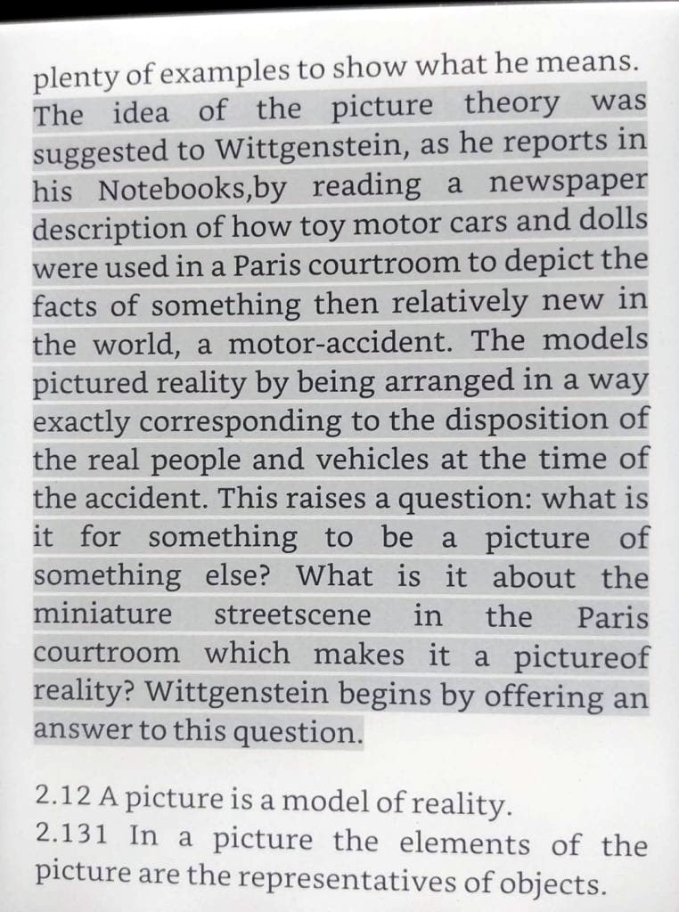

S.Albayrak Home Categories
[next] [prev] [prev-tail] [tail] [up]
Apparently Wittgenstein got the inspiration for his picture theory from a Paris courtroom (Wittgenstein: A Very Short Introduction)

[next] [prev] [prev-tail] [front] [up]